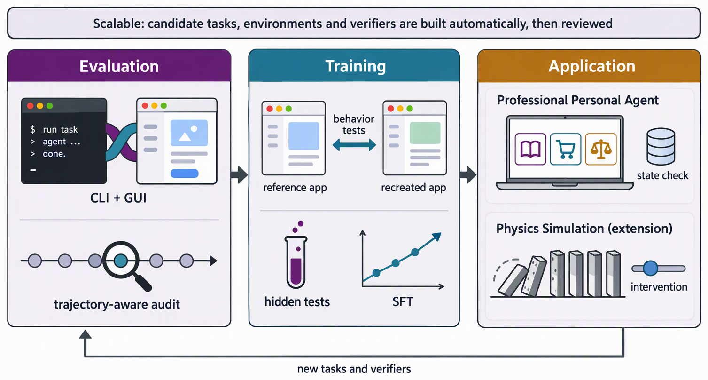

三、课题研究内容
□ 研究框架：评测 → 训练 → 应用，前一项研究的结论构成后一项研究的动机

可扩展评测与训练框架总览（示意图）
研究一 · 评测
已完成
面向混合能力范式的可信评测
verifier：轨迹感知审计（WeaveBench）｜ 前期：GUIPruner · ST-Lite 降开销
结论：瓶颈在自主编排与自我验证 → 需要训练新的行为模式
研究二 · 训练
已完成
基于可验证复刻环境的混合行为训练
verifier：以参考应用为参照的隐藏行为测试 ｜ RecreationWorld
结论：可验证环境中习得的行为可迁移 → 推广到真实世界
研究三 · 应用
待完成
通用数字智能体走向真实世界
verifier：状态数据库 · 反事实干预 ｜ 职业环境（主体）· 物理仿真（拓展）
复用研究一的评测思想与研究二的训练流程，形成闭环
贯穿主线 可扩展：verifier 可自动构造，使评测与训练随任务规模扩展；GUIPruner / ST-Lite 降低 GUI 通道的计算开销